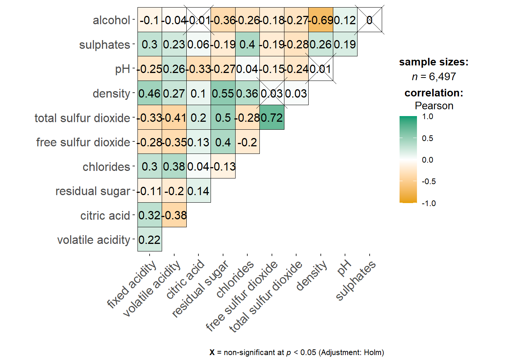

pacman::p_load(corrplot, ggstatsplot, tidyverse)Hands-on Ex 5.2 - Visual Correlation Analysis
5.1 Overview
The correlation coefficient is a widely used statistic for measuring both the strength and type of relationship between two variables. Its values range from -1.0 to 1.0, where a coefficient of 1 indicates a perfect linear relationship, -1.0 signifies a perfect inverse relationship, and 0.0 suggests no linear correlation between the variables.
When dealing with multivariate data, correlation coefficients for all pairwise comparisons are typically displayed in a table format known as a correlation matrix or scatterplot matrix.
There are three primary reasons for computing a correlation matrix:
- To examine relationships between high-dimensional variables on a pairwise basis.
- To serve as an input for other statistical analyses, such as exploratory factor analysis, confirmatory factor analysis, structural equation modeling, and linear regression, particularly when handling missing values pairwise.
- To act as a diagnostic tool in other analyses. For instance, in linear regression, a high degree of correlation among variables may indicate unreliable estimates.
For large datasets with numerous observations and variables, a corrgram is often used to visually analyze and explore relationships among variables. The design of a corrgram is based on two key principles:
- Representing the sign and magnitude of correlations through visual elements.
- Reordering variables in the correlation matrix so that similar variables are placed next to each other, making patterns easier to identify.
This hands-on exercise will guide you through visualizing correlation matrices in R. It consists of three sections: creating a correlation matrix using pairs() from R Graphics, plotting a corrgram with the corrplot package, and generating an interactive correlation matrix using the plotly package in R.
5.2 Installing and Launching R Packages
The code chunk below is used to install and launch corrplot, ggpubr, plotly and tidyverse in RStudio.
5.3 Importing and Preparing The Data Set
In this hands-on exercise, we will use the Wine Quality Data Set from the UCI Machine Learning Repository. This dataset contains 13 variables and 6,497 observations. For the purpose of this exercise, both red and white wine data have been merged into a single CSV file named wine_quality.csv.
5.3.1 Importing Data
First, we import the data into R by using read_csv() of readr package.
wine <- read_csv("data/wine_quality.csv")Beside quality and type, the rest of the variables are numerical and continuous data type.
5.4 Building Correlation Matrix: pairs() method
There are more than one way to build scatterplot matrix with R. In this section, we will create a scatterplot matrix by using the pairs function of R Graphics.
5.4.1 Building a basic correlation matrix
Figure below shows the scatter plot matrix of Wine Quality Data. It is a 11 by 11 matrix.
pairs(wine[,1:11])
The pairs() function requires a matrix or data frame as input. Creating a scatterplot matrix with pairs() is straightforward, using its default settings. In this case, columns 2 to 12 of the wine data frame are selected to generate the scatterplot matrix. These columns represent key variables such as fixed acidity, volatile acidity, citric acid, residual sugar, chlorides, free sulfur dioxide, total sulfur dioxide, density, pH, sulphates, and alcohol.
pairs(wine[,2:12])
5.4.2 Drawing the lower corner
The pairs() function in R Graphics offers various customization options. One common practice is to display only the upper or lower half of the correlation matrix since it is symmetric. To show only the lower half, the upper.panel argument is used, as demonstrated in the code snippet below. This helps reduce redundancy and makes the visualization more readable.
pairs(wine[,2:12], upper.panel = NULL)
Similarly, you can display the upper half of the correlation matrix by using the code chunk below.
pairs(wine[,2:12], lower.panel = NULL)
5.4.3 Including with correlation coefficients
To show the correlation coefficient of each pair of variables instead of a scatter plot, panel.cor function will be used. This will also show higher correlations in a larger font.
panel.cor <- function(x, y, digits=2, prefix="", cex.cor, ...) {
usr <- par("usr")
on.exit(par(usr))
par(usr = c(0, 1, 0, 1))
r <- abs(cor(x, y, use="complete.obs"))
txt <- format(c(r, 0.123456789), digits=digits)[1]
txt <- paste(prefix, txt, sep="")
if(missing(cex.cor)) cex.cor <- 0.8/strwidth(txt)
text(0.5, 0.5, txt, cex = cex.cor * (1 + r) / 2)
}
pairs(wine[,2:12],
upper.panel = panel.cor)
5.5 Visualising Correlation Matrix: ggcormat()
One major limitation of the correlation matrix is that scatterplots can become overly cluttered when dealing with a large number of observations (typically more than 500). To address this issue, the corrgram visualization technique, introduced by D. J. Murdoch and E. D. Chow (1996) and later refined by M. Friendly (2002), is used.
At least three R packages offer functions for creating corrgrams:
Additionally, some packages, such as ggstatsplot, also provide functions for constructing corrgrams.
In this section, you will learn how to visualize a correlation matrix using ggcorrmat() from the ggstatsplot package.
5.5.1 The basic plot
One of the advantage of using ggcorrmat() over many other methods to visualise a correlation matrix is it’s ability to provide a comprehensive and yet professional statistical report as shown in the figure below.
ggstatsplot::ggcorrmat(
data = wine,
cor.vars = 1:11)
ggstatsplot::ggcorrmat(
data = wine,
cor.vars = 1:11,
ggcorrplot.args = list(outline.color = "black",
hc.order = TRUE,
tl.cex = 10),
title = "Correlogram for wine dataset",
subtitle = "Four pairs are no significant at p < 0.05"
)
Key takeaways from the code chunk above:
- The
cor.varsargument is used to compute the correlation matrix, which serves as the foundation for the corrgram. - The
ggcorrplot.argsargument allows for additional (mainly aesthetic) customizations that will be passed to theggcorrplot::ggcorrplotfunction. However, certain arguments—such ascorr,method,p.mat,sig.level,ggtheme,colors,lab,pch,legend.title, anddigits—should be avoided, as they are already internally handled.
A sample sub-code chunk can be used to fine-tune specific elements of the plot, such as adjusting the font size for the x-axis, y-axis, and statistical report.
ggplot.component = list(
theme(text=element_text(size=5),
axis.text.x = element_text(size = 8),
axis.text.y = element_text(size = 8)))5.6 Building multiple plots
Since ggstasplot is an extension of ggplot2, it also supports faceting. However the feature is not available in ggcorrmat() but in the grouped_ggcorrmat() of ggstatsplot.
grouped_ggcorrmat(
data = wine,
cor.vars = 1:11,
grouping.var = type,
type = "robust",
p.adjust.method = "holm",
plotgrid.args = list(ncol = 2),
ggcorrplot.args = list(outline.color = "black",
hc.order = TRUE,
tl.cex = 10),
annotation.args = list(
tag_levels = "a",
title = "Correlogram for wine dataset",
subtitle = "The measures are: alcohol, sulphates, fixed acidity, citric acid, chlorides, residual sugar, density, free sulfur dioxide and volatile acidity",
caption = "Dataset: UCI Machine Learning Repository"
)
)
Things to learn from the code chunk above:
- to build a facet plot, the only argument needed is
grouping.var. - Behind group_ggcorrmat(), patchwork package is used to create the multiplot.
plotgrid.argsargument provides a list of additional arguments passed to patchwork::wrap_plots, except for guides argument which is already separately specified earlier. - Likewise,
annotation.argsargument is calling plot annotation arguments of patchwork package.
5.7 Visualising Correlation Matrix using corrplot Package
In this hands-on exercise, we will focus on corrplot.
5.7.1 Getting started with corrplot
Before we can plot a corrgram using corrplot(), we need to compute the correlation matrix of wine data frame.
In the code chunk below, cor() of R Stats is used to compute the correlation matrix of wine data frame.
wine.cor <- cor(wine[, 1:11])Next, corrplot() is used to plot the corrgram by using all the default setting as shown in the code chunk below.
corrplot(wine.cor)
By default, the corrgram is visualized using circles within a symmetric matrix layout. The color scheme follows a diverging blue-red gradient, where blue represents positive correlations and red indicates negative correlations. The intensity or saturation of the color reflects the strength of the correlation coefficient—darker shades signify a stronger linear relationship between variables, while lighter shades indicate a weaker correlation.
5.7.2 Working with visual geometrics
The corrplot package offers seven different geometric representations (specified via the method parameter) to visually encode correlation values: circle, square, ellipse, number, shade, color, and pie. By default, the circle method is used. However, this can be modified using the method argument, as demonstrated in the code chunk below.
corrplot(wine.cor,
method = "ellipse") 
5.7.3 Working with layout
corrplor() supports three layout types, namely: “full”, “upper” or “lower”. The default is “full” which display full matrix. The default setting can be changed by using the type argument of corrplot().
corrplot(wine.cor,
method = "ellipse",
type="lower")
The default layout of the corrgram can be further customised. For example, arguments diag and tl.col are used to turn off the diagonal cells and to change the axis text label colour to black colour respectively as shown in the code chunk and figure below.
corrplot(wine.cor,
method = "ellipse",
type="lower",
diag = FALSE,
tl.col = "black")
5.7.4 Working with mixed layout
With corrplot package, it is possible to design corrgram with mixed visual matrix of one half and numerical matrix on the other half. In order to create a coorgram with mixed layout, the corrplot.mixed(), a wrapped function for mixed visualisation style will be used.
Figure below shows a mixed layout corrgram plotted using wine quality data.
corrplot.mixed(wine.cor,
lower = "ellipse",
upper = "number",
tl.pos = "lt",
diag = "l",
tl.col = "black")
The code chunk used to plot the corrgram are shown below.
corrplot.mixed(wine.cor,
lower = "ellipse",
upper = "number",
tl.pos = "lt",
diag = "l",
tl.col = "black")
Here, the lower and upper arguments define the visualization methods for different halves of the corrgram. In this case, ellipses represent the lower half, while numerical values map the upper half. The tl.pos argument controls the placement of axis labels, and the diag argument specifies the glyph used along the principal diagonal of the corrgram.
5.7.5 Combining corrgram with the significant test
In statistical analysis, it is important to determine which pairs of variables have correlation coefficients that are statistically significant. The figure below presents a corrgram combined with significance testing, highlighting that not all correlation pairs are statistically significant. For instance, the correlation between total sulfur dioxide and free sulfur dioxide is significant at a 0.1 significance level, whereas the correlation between total sulfur dioxide and citric acid is not.
With corrplot package, we can use the cor.mtest() to compute the p-values and confidence interval for each pair of variables.
wine.sig = cor.mtest(wine.cor, conf.level= .95)We can then use the p.mat argument of corrplot function as shown in the code chunk below.
corrplot(wine.cor,
method = "number",
type = "lower",
diag = FALSE,
tl.col = "black",
tl.srt = 45,
p.mat = wine.sig$p,
sig.level = .05)
5.7.6 Reorder a corrgram
Reordering the matrix in a corrgram is crucial for uncovering hidden structures and patterns. By default, the attributes in a corrgram are arranged according to the original correlation matrix. However, this default setting can be modified using the order argument in corrplot(). The corrplot package supports four ordering methods:
- “AOE” (Angular Order of the Eigenvectors): This method orders variables based on their eigenvectors, as described by Michael Friendly (2002).
- “FPC” (First Principal Component): Variables are ordered based on the first principal component.
- “hclust” (Hierarchical Clustering): Groups similar variables together based on a clustering algorithm. The agglomeration method can be specified using
hclust.method, which supports options such as “ward”, “single”, “complete”, “average”, “mcquitty”, “median”, or “centroid”. - “alphabet”: Orders variables alphabetically.
Additional ordering algorithms can be found in the seriation package.
corrplot.mixed(wine.cor,
lower = "ellipse",
upper = "number",
tl.pos = "lt",
diag = "l",
order="AOE",
tl.col = "black")
5.7.7 Reordering a correlation matrix using hclust
If using hclust, corrplot() can draw rectangles around the corrgram based on the results of hierarchical clustering.
corrplot(wine.cor,
method = "ellipse",
tl.pos = "lt",
tl.col = "black",
order="hclust",
hclust.method = "ward.D",
addrect = 3)
5.8 Reference
Michael Friendly (2002). “Corrgrams: Exploratory displays for correlation matrices”. The American Statistician, 56, 316–324.
D.J. Murdoch, E.D. Chow (1996). “A graphical display of large correlation matrices”. The American Statistician, 50, 178–180.
5.8.1 R packages
ggcormat()of ggstatsplot packageggscatmatandggpairsof GGally.- corrplot. A graphical display of a correlation matrix or general matrix. It also contains some algorithms to do matrix reordering. In addition, corrplot is good at details, including choosing color, text labels, color labels, layout, etc.
- corrgram calculates correlation of variables and displays the results graphically. Included panel functions can display points, shading, ellipses, and correlation values with confidence intervals.